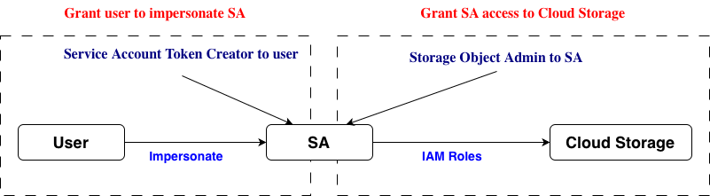
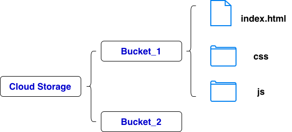

Introduction
Cloud Storage stores files as objects and does not have a true directory (tree) structure
Cloud Storage is a flat object store, folders are name prefixes
Storage classes
Standard
- Hot data, highest storage cost, no minimum storage duration, no retrieval cost
Nearline
- Infrequently accessed data, lower storage cost than standard, 30 days, $0.01 per GB for retrieval
Coldline
- Infrequently accessed data, lower storage cost than nearline, 90 days, $0.02 per GB for retrieval
Archive
- Data archiving, lowest storage cost, 365 days, $0.05 per GB for retrieval
Access Control
Project Level
- In IAM
- roles/viewer, access objects in buckets
- roles/editor, read/write all buckets and all objects
- roles/storage.admin, full contole
- roles/storage.objectAdmin, read/write/delete object
- roles/storage.objectCreator, upload new objects
- roles/storage.objectViewer, list/download objects
Bucket Level
- Uniform Bucket-Level Access (UBLA) controls object access by removing object-level ACLs and enforcing IAM at the bucket level for all objects in a bucket
- In a bucket
- Configuration -> Access control > Uniform
- Permissions, grant access to principals
- roles/storage.admin, full contole
- roles/storage.objectAdmin, read/write/delete object
- roles/storage.objectCreator, upload new objects
- roles/storage.objectViewer, list/download objects
Object Level
- In a bucket
- Configuration -> Access control > Fine-grained
- Select an object -> Edit Access
- The user granted access permission can read the object, however, not able to write/delete without project-level storage roles
Signed URL
Grant temporary, limited access to a specific object

# add the current user as the principal to the default service account with serviceAccountTokenCreator role
# gcloud iam service-accounts add-iam-policy-binding service_account_name --member="user:current_principal" --role="roles/iam.serviceAccountTokenCreator"
gcloud iam service-accounts add-iam-policy-binding 368031139054-compute@developer.gserviceaccount.com --member="user:gcpoperationslin@gmail.com" --role="roles/iam.serviceAccountTokenCreator"
# create a signed url with current service account
# gcloud storage sign-url gs://[bucket_name]/[file_name] --duration=[time] --impersonate-service-account=[service_account_name]
gcloud storage sign-url gs://gcpoperationstorage/housing.csv --duration=15m --impersonate-service-account=368031139054-compute@developer.gserviceaccount.com
# access in browser
# access with curl
curl -L -O "signed_url"
Object Versioning
Turn on Versioning
- bucket -> Protection -> Enable Object versioning
- bucket -> Lifecycle -> Add rules
Access
- object -> Version history
# list versions
# the latest version has largest version number
gcloud storage ls -a gs://[bucket_name]/[object_name]
# cp
gcloud storage cp gs://[bucket_name]/[object_name]#[version_number] .
# restore a old version
gcloud storage cp gs://[bucket_name]/[object_name]#[old_version_number] gs://[bucket_name]/[object_name]
Directory Synchronization
# synchronize a directory to a bucket
gsutil rsync -r [local_folder] gs://[bucket_name]/[folder_name]
Lifecycle Management
bucket -> Lifecycle
Updates to lifecycle configuration may take up to 24 hours to go into effect
Retention
bucket -> Protection -> Retention
Customer-Supplied Encryption Key (CSEK)
# create a key
KEY=$(openssl rand -base64 32)
# upload object with a key
gsutil -o "GSUtil:encryption_key=$KEY" cp [file_name] gs://[bucket_name]/[file_name]
# download object with the same key
gsutil -o "GSUtil:encryption_key=$KEY" cp gs://[bucket_name]/[file_name] .
# create a key
KEY=$(openssl rand -base64 32)
# add key to ~/.boto
[GSUtil]
encryption_key = [generated_key]
# upload object with a key
# gsutil use key in .boto automatically
gsutil cp [file_name] gs://[bucket_name]/[file_name]
# download object with the same key
gsutil cp gs://[bucket_name]/[file_name] .
Static Web

- Create a bucket
- Save the files of the static web in the root of the bucket
- Bucket -> Permissions
- Remove Public Access Prevention
- Grant access
- Principal: allUsers
- Storage Object Viewer